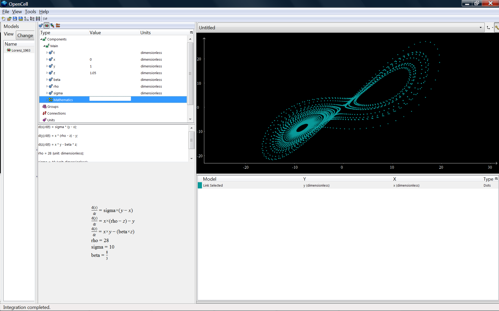
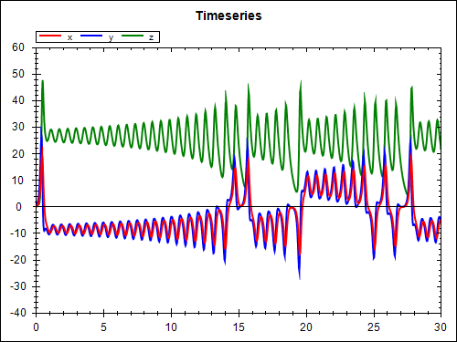
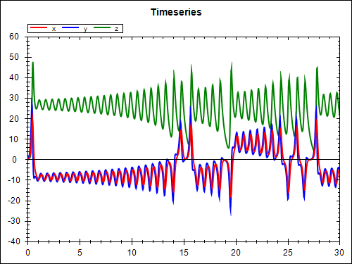

This workspace houses a CellML encoding of the 1963 Lorenz model which became a well-known demonstration of deterministic chaos. The original article DOI is 10.1175/1520-0469(1963)020<0130:DNF>2.0.CO;2. This model was encoded based on the Octave code available in the related Wikipedia article.
An OpenCell 0.8 session file is available. SED-ML can also be used to simulate this model, the simulation description is in Lorenz_1963_sedml.xml, and the simulation experiment can be run using the SED-ML Web Tools. The figures below show the results fro OpenCell and from using SED-ML.


 
